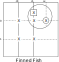
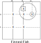

Finned Fish
左の図はX-Wing（2D-Fish)です。BaseSetとCoverSetのLocked関係から、丸付き数字Xは候補数字から除外できます。
大きな丸はブロックを表すとします。このとき、右図のように四角付きの数字Xが追加で存在しても、丸付き数字Xは候補数字から除外できます。
丸付き数字Xが真なら、行r0のその他の数字Xが除外されると同時に列c1四角付きの数字Xも除外され、行r1では真であるべき数字Xが過剰になります。
四角付き数字XのことをFishのFin(ひれ）と呼びます。右図のセル配置をFinned Fishと呼びます。
Fin付のFishでは、双対関係が成立しないので、5次以上のFinnedFishが必要なケースもあります。
 

Finned Fishの例 を示します。（左から Finned X-Wing、Finned SwordFish、Finned JerryFish） 黄色セルがFish部分、緑セルがFinです。


81........27.3149.......718.9.34.....7.....6.....96.2.182.......4512.98........41
19.3.......2...14.8..641...3.9..8...75.....28...7..9.5...164..2.16...7.......7.81
..9..154..5..9.....6.5..92.8..3..1.41..4.6..95.4..8..2.42..9.6.....6..1..187..2..
Finned Fishの解析プログラム
Finned Fish の解析アルゴリズムは、BaseSet、CoverSet、Finの概念を用いて解きます。 プログラムは、汎用Fishサブプログラム(ExtFishSub)のパラメータ制御で解きます。
public partial class FishGen: AnalyzerBaseV2{
// FinnedFish
public bool FinnedXWing(){ return Fish_Basic(2,true); }
public bool FinnedSwordFish(){ return Fish_Basic(3,true); }
public bool FinnedJellyFish(){ return Fish_Basic(4,true); }
public bool FinnedSquirmbag(){ return Fish_Basic(5,true); }
public bool FinnedWhale(){ return Fish_Basic(6,true); }
public bool FinnedLeviathan(){ return Fish_Basic(7,true); }
}